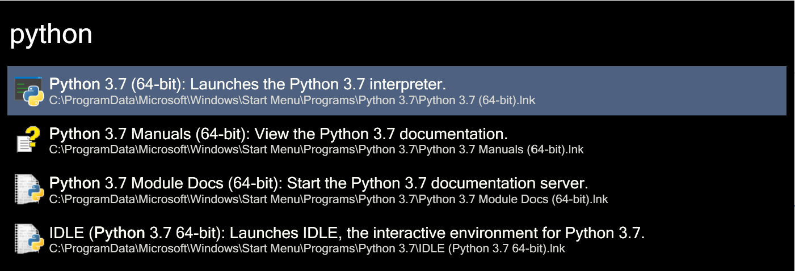
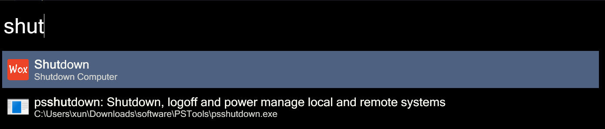
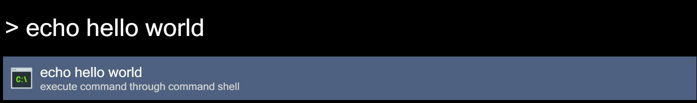
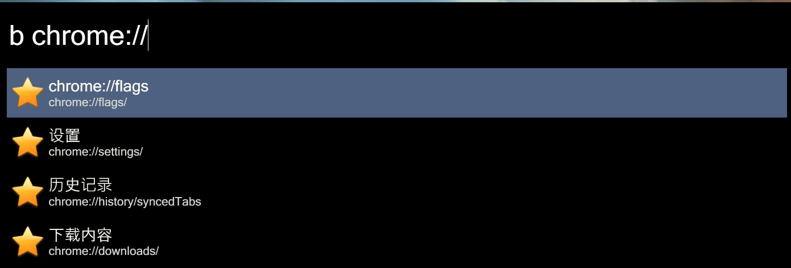

Wox Documentation¶
This doc contains all intructions of Wox, including basic usage, settings and how to make a Wox plugin/theme.
Quick Start
Jump to Catalogue to ignore unnecessary information. For beginners, read Basic Usage part carefully.
Examples
Find Applications

Find Built-In usages

Terminal input

Bookmark

Introduction¶
Here we explain some intelligent ideas of Wox.
What is Wox?¶
Wox is a launcher in Windows. We are trying to make Wox work like Alfred.
You can use to search local programs, files. It can also search web content by using plugins, such as how is the weather today, what's the score of xxx movie and so on.
Wox: A Plugin-based Launcher
Wox is based on plugins. We regard each plugin as an individual program, and use some keywords to triger it.
- Normally the input string should look like
A xxxxx, where A is the Action keyword, and xxxxx is what you want to tell the plugin.
System plugin generally does not require keywords (except Web Search plugin) and user can't uninstall those system plugins now, they all built-in plugins. User plugin requires a action keyword. For example, I want to use the youdao translator plugin, then you need to use the yd + space + words. The action keyword can be configured, and I will introduce how to use shortcuts to simplify this process in the following sections.
Wox is plugin-based, see more about explaination at intro of plugins.
Why we develop Wox?¶
History¶
Before written Wox, I always wanted to write a launcher. I like to using hotkeys instead of keyboards, especially after using Vim.
Win + R inside Windows cannot search programs, not good for me. I also used Launchy, but it seems stopped maintanence for a long time.
Back to 2011, I tried to using C-lang to make some attempts, like fstart and smartrun.
Maybe I'm a new guy to coding at that time, those attempts failed at the end.
Probably in November 2013, I know Alfred, an awesome launcher in Mac.
Unfortunately, there is no such thing under Windows :(
So, naturally, I came up an idea that making a launcher like Alfred, even the name initially was made as WinAlfred. I made a post on V2ex, which has some of the affirmative, later some people get involved in the project. In the middle of the developing Wox, I was warned by Alfred. Because the WinAlfred name contains Alfred, and cannot be used because that's their trademark. Finally, Wox come.
Author: Bao Qian
¶Supplements¶
If you don't know what Alfred is, search it on google.
Active Fork
The active fork is jjw24/Wox, just push your new ideas or open issues if you want.
The original repo is not archived, but far behind this fork.
Thank Bao Qian for his generous work. You can find more in History Section
Catalogue¶
- Install Wox
- Getting Started: contains all basic usage of
Wox, this is what you should read as a beginner.- Quick Start: a start guide
- Basic Plugins Usage: contains all built-in plugins usage and settings.
- Theme Usage: contains all theme-related usage and settings.
- Settings: contains all settings except
pluginsandthemeof the main page.
- Advanced Usage with plugins: more about plugins, install, usage and develop.
- Keep up to date: The update method
- Developer: redirect developers to what they want to modify.
Projects¶
This is the expansion of Source
- Wox.Wiki (this doc)
- This doc is open sourced at: hsungong/Wox.Wiki
-
If you want to help improve this doc or translate it to your native language, open issues at hsungong/Wox.Wiki/issues or email to me with email
-
Wox (or Wox-Launcher)
- It is now open sourced at jjw24/Wox, any pull requests and issues are appreciate.
- The original location can be found at
Other projects¶
References¶
If the doc is not written by the maintainer Xun Gong, the author will be pointed out.
-
Xun Gong: As the
maintainer- Visit my Github Page, or Email to me.